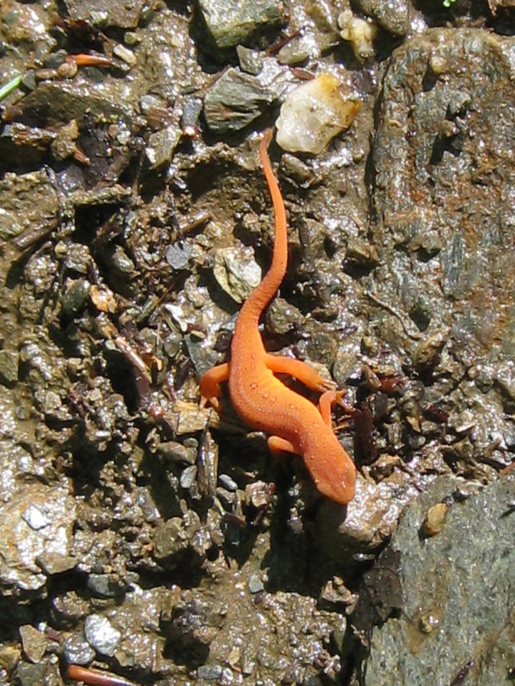

 |
Reptiles and AmphibiansAmong the most remarkable populations in Fairlee Wetlands are the frogs! Every type of frog and toad endemic to our area seems to live there, and in such abundance that some years they can be found laying eggs or hatching in the wet meadows and waterlogged tire ruts of forest roads half way up the hillsides — as though these were vernal pools, as though weekends didn’t bring caravans of fat-tired four-wheelers splashing through their teeming nurseries. A hiker on waterlogged sections of upper Cross Mountain Road N during mating season will hardly be able to avoid stepping on them. Every square foot of water can contain a dozen or more frogs — big ones, tiny ones, green ones, spotted ones, striped ones — and in every direction alarmed frogs erupt from puddles and meadows like corn on a hot griddle. Frogs are crucial amphibians in wetland systems and need both terrestrial and aquatic habitats in which to reproduce and feed. While tadpoles control algal populations, adult frogs forage on insects. They in turn provide food for the herons and other pond dwellers. They are perhaps most valuable to us as indicators of ecosystem health, for their thin skin absorbs whatever toxins may be in the surrounding environment, causing severe genetic mutations and declining populations. The abundance and apparent vigor of the frogs in the Fairlee Wetlands, (in spite of the four-wheelers and herons) are excellent signs that this system is truly pristine.
|